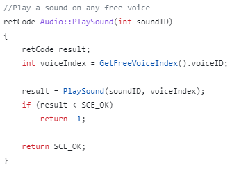
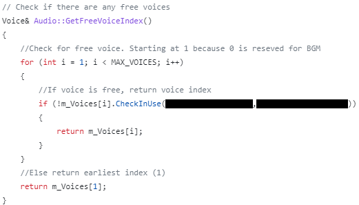
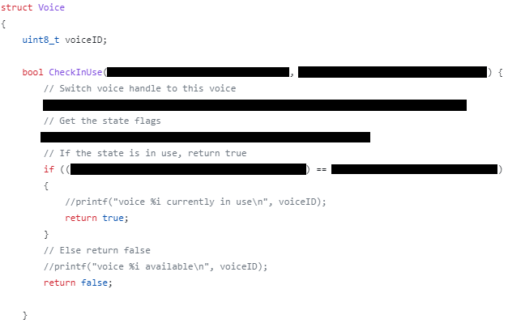
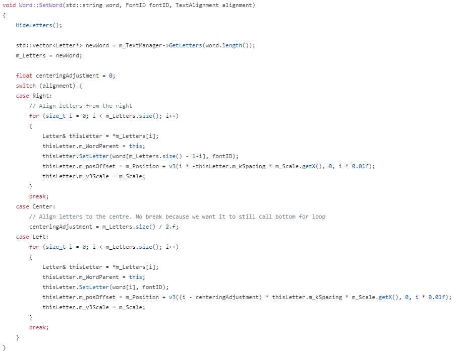
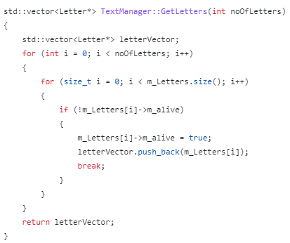

Here is the audio manager. It is a static system that can be called from anywhere using the GetInstance() method. It is used to play sounds and music. It uses virtual audio sources called Voices which are kept track of as voice objects. These voices are stored as structs which have methods that allow the system to figure out the status of each voice. Whenever a new sound is played, the system checks for an available sound and plays the sound on that voice. NOTE: Sony code which is under NDA is redacted
  I also wrote a custom font system for the game. The font manager has a display text function which converts string characters to UVs on a spritesheet and displays them in sequence on screen. It supports alignment and can be given a lifetime to remove the letters after a set duration. This font system is used for the HUD and the floating damage numbers. Said damage numbers also shrink over time for added visual effect.
This code sets the letters stored in a word parent object to the letters specified in the string passed. It then gets the letters it needs from the pool and displays them
 Template by OS Templates